After consideration, the admissions.csv database seems really interesting. It is useful to analyze the connection between mutiple factors and death.
library(tidyverse)## ── Attaching packages ─────────────────────────────────────────────────────────────────────── tidyverse 1.2.1 ──## ✔ ggplot2 3.1.0 ✔ purrr 0.2.5
## ✔ tibble 1.4.2 ✔ dplyr 0.7.8
## ✔ tidyr 0.8.2 ✔ stringr 1.3.1
## ✔ readr 1.2.1 ✔ forcats 0.3.0## ── Conflicts ────────────────────────────────────────────────────────────────────────── tidyverse_conflicts() ──
## ✖ dplyr::filter() masks stats::filter()
## ✖ dplyr::lag() masks stats::lag()library(devtools)
library(readr)
library(lubridate)##
## Attaching package: 'lubridate'## The following object is masked from 'package:base':
##
## datelibrary(broom)admissions <-
read_csv("./database/data/admissions.csv") %>%
janitor::clean_names()## Parsed with column specification:
## cols(
## ROW_ID = col_double(),
## SUBJECT_ID = col_double(),
## HADM_ID = col_double(),
## ADMITTIME = col_datetime(format = ""),
## DISCHTIME = col_datetime(format = ""),
## DEATHTIME = col_datetime(format = ""),
## ADMISSION_TYPE = col_character(),
## ADMISSION_LOCATION = col_character(),
## DISCHARGE_LOCATION = col_character(),
## INSURANCE = col_character(),
## LANGUAGE = col_character(),
## RELIGION = col_character(),
## MARITAL_STATUS = col_character(),
## ETHNICITY = col_character(),
## EDREGTIME = col_datetime(format = ""),
## EDOUTTIME = col_datetime(format = ""),
## DIAGNOSIS = col_character(),
## HOSPITAL_EXPIRE_FLAG = col_double(),
## HAS_CHARTEVENTS_DATA = col_double()
## )names(admissions)## [1] "row_id" "subject_id" "hadm_id"
## [4] "admittime" "dischtime" "deathtime"
## [7] "admission_type" "admission_location" "discharge_location"
## [10] "insurance" "language" "religion"
## [13] "marital_status" "ethnicity" "edregtime"
## [16] "edouttime" "diagnosis" "hospital_expire_flag"
## [19] "has_chartevents_data"# The year should be delt with to become normal. The discharge time means the time when the patient leave the hospital.
# see types
class(admissions$admittime)## [1] "POSIXct" "POSIXt"class(admissions$dischtime)## [1] "POSIXct" "POSIXt"class(admissions$deathtime)## [1] "POSIXct" "POSIXt"class(admissions$admission_type) ## [1] "character"class(admissions$insurance)## [1] "character"class(admissions$religion)## [1] "character"class(admissions$ethnicity)## [1] "character"class(admissions$edregtime)## [1] "POSIXct" "POSIXt"class(admissions$edouttime)## [1] "POSIXct" "POSIXt"All of them are factors.
#Create year, month, day variables
admissions <-
admissions %>%
separate(admittime, into = c("admittime_year", "admittime_month", "admittime_day"), sep = "-")
admissions <-
admissions %>%
separate(dischtime, into = c("dischtime_year", "dischtime_month", "dischtime_day"), sep = "-") %>%
separate(dischtime_day, into = c("dischtime_day", "dischtime_time"), sep = " ")
admissions <-
admissions %>%
separate(deathtime, into = c("deathtime_year", "deathtime_month", "deathtime_day"), sep = "-") %>%
separate(deathtime_day, into = c("deathtime_day", "deathtime_time"), sep = " ")
admissions <-
admissions %>%
separate(edregtime, into = c("edregtime_year", "edregtime_month", "edregtime_day"), sep = "-") %>%
separate(edregtime_day, into = c("edregtime_day", "edregtime_time"), sep = " ")
admissions <-
admissions %>%
separate(edouttime, into = c("edouttime_year", "edouttime_month", "edouttime_day"), sep = "-") %>%
separate(edouttime_day, into = c("edouttime_day", "edouttime_time"), sep = " ")
# Correct year to normal
admissions <-
admissions %>%
mutate(admittime_year = as.numeric(admittime_year) - 200, dischtime_year = as.numeric(dischtime_year) - 200, deathtime_year = as.numeric(deathtime_year) - 200, edregtime_year = as.numeric(edregtime_year) - 200, edouttime_year = as.numeric(edouttime_year) - 200)
# Take a look
head(admissions)## # A tibble: 6 x 33
## row_id subject_id hadm_id admittime_year admittime_month admittime_day
## <dbl> <dbl> <dbl> <dbl> <chr> <chr>
## 1 21 22 165315 1996 04 09 12:26:00
## 2 22 23 152223 1953 09 03 07:15:00
## 3 23 23 124321 1957 10 18 19:34:00
## 4 24 24 161859 1939 06 06 16:14:00
## 5 25 25 129635 1960 11 02 02:06:00
## 6 26 26 197661 1926 05 06 15:16:00
## # ... with 27 more variables: dischtime_year <dbl>, dischtime_month <chr>,
## # dischtime_day <chr>, dischtime_time <chr>, deathtime_year <dbl>,
## # deathtime_month <chr>, deathtime_day <chr>, deathtime_time <chr>,
## # admission_type <chr>, admission_location <chr>,
## # discharge_location <chr>, insurance <chr>, language <chr>,
## # religion <chr>, marital_status <chr>, ethnicity <chr>,
## # edregtime_year <dbl>, edregtime_month <chr>, edregtime_day <chr>,
## # edregtime_time <chr>, edouttime_year <dbl>, edouttime_month <chr>,
## # edouttime_day <chr>, edouttime_time <chr>, diagnosis <chr>,
## # hospital_expire_flag <dbl>, has_chartevents_data <dbl># read original data
admissions_origin <-
read_csv("./database/data/admissions.csv") %>%
janitor::clean_names()## Parsed with column specification:
## cols(
## ROW_ID = col_double(),
## SUBJECT_ID = col_double(),
## HADM_ID = col_double(),
## ADMITTIME = col_datetime(format = ""),
## DISCHTIME = col_datetime(format = ""),
## DEATHTIME = col_datetime(format = ""),
## ADMISSION_TYPE = col_character(),
## ADMISSION_LOCATION = col_character(),
## DISCHARGE_LOCATION = col_character(),
## INSURANCE = col_character(),
## LANGUAGE = col_character(),
## RELIGION = col_character(),
## MARITAL_STATUS = col_character(),
## ETHNICITY = col_character(),
## EDREGTIME = col_datetime(format = ""),
## EDOUTTIME = col_datetime(format = ""),
## DIAGNOSIS = col_character(),
## HOSPITAL_EXPIRE_FLAG = col_double(),
## HAS_CHARTEVENTS_DATA = col_double()
## )# add a death factor and duration factor
# exclude NEWBORN, because they are not treated as patients.
### There are too many diagnosis, so the diagnosis will be analyzed by some analysis of scores in another part.
admissions_death <-
mutate(admissions_origin, living = is.na(admissions_origin$deathtime), hospitaltime = admissions_origin$dischtime - admissions_origin$admittime, edtime = admissions_origin$edouttime - admissions_origin$edregtime) %>%
filter(diagnosis != "NEWBORN")# glance data
skimr::skim(admissions_death)## Skim summary statistics
## n obs: 51128
## n variables: 22
##
## ── Variable type:character ─────────────────────────────────────────────────────────────────────────────────────
## variable missing complete n min max empty n_unique
## admission_location 0 51128 51128 17 25 0 9
## admission_type 0 51128 51128 6 9 0 4
## diagnosis 0 51128 51128 2 190 0 15645
## discharge_location 0 51128 51128 3 25 0 17
## ethnicity 0 51128 51128 5 56 0 41
## insurance 0 51128 51128 7 10 0 5
## language 17786 33342 51128 4 4 0 75
## marital_status 2605 48523 51128 6 17 0 7
## religion 451 50677 51128 5 22 0 20
##
## ── Variable type:difftime ──────────────────────────────────────────────────────────────────────────────────────
## variable missing complete n min max
## edtime 20252 30876 51128 -2504940 secs 253680 secs
## hospitaltime 0 51128 51128 -1361 mins 424311 mins
## median n_unique
## 17700 secs 1483
## 9891.5 mins 24462
##
## ── Variable type:logical ───────────────────────────────────────────────────────────────────────────────────────
## variable missing complete n mean count
## living 0 51128 51128 0.89 TRU: 45337, FAL: 5791, NA: 0
##
## ── Variable type:numeric ───────────────────────────────────────────────────────────────────────────────────────
## variable missing complete n mean sd p0
## hadm_id 0 51128 51128 149980.03 28920.51 1e+05
## has_chartevents_data 0 51128 51128 0.97 0.17 0
## hospital_expire_flag 0 51128 51128 0.11 0.32 0
## row_id 0 51128 51128 31075 17208.1 2
## subject_id 0 51128 51128 36524.63 28971.81 3
## p25 p50 p75 p100 hist
## 124877.75 150082.5 175035.25 2e+05 ▇▇▇▇▇▇▇▇
## 1 1 1 1 ▁▁▁▁▁▁▁▇
## 0 0 0 1 ▇▁▁▁▁▁▁▁
## 16097.75 32292.5 46189.25 58976 ▆▆▆▆▇▇▇▇
## 13116.75 26395 59788.25 99999 ▇▇▅▂▃▂▂▂
##
## ── Variable type:POSIXct ───────────────────────────────────────────────────────────────────────────────────────
## variable missing complete n min max median
## admittime 0 51128 51128 2100-06-07 2210-08-17 2151-02-24
## deathtime 45337 5791 51128 2100-06-19 2208-02-05 2150-08-29
## dischtime 0 51128 51128 2100-06-09 2210-08-24 2151-03-06
## edouttime 20252 30876 51128 2100-06-08 2210-08-17 2150-12-12
## edregtime 20252 30876 51128 2100-06-07 2210-08-17 2150-12-12
## n_unique
## 50813
## 5772
## 50877
## 30863
## 30873### try logistic regression step by step.
#SLR
par(mfrow = c(2,2))
living_lm1 <-
glm(living ~ admission_type, data = admissions_death) %>%
plot()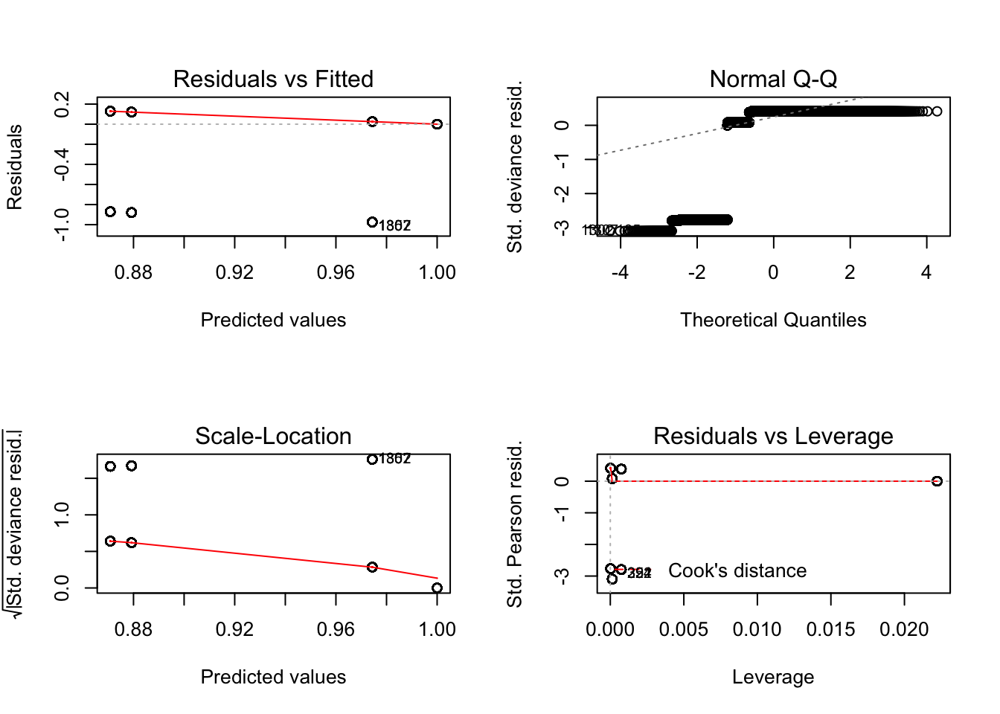
summary(living_lm1)## Length Class Mode
## 0 NULL NULLbroom::glance(living_lm1)## # A tibble: 0 x 0broom::tidy(living_lm1)## # A tibble: 0 x 0living_lm2 <-
glm(living ~ admission_location, data = admissions_death) %>%
plot()## Warning in sqrt(crit * p * (1 - hh)/hh): NaNs produced
## Warning in sqrt(crit * p * (1 - hh)/hh): NaNs produced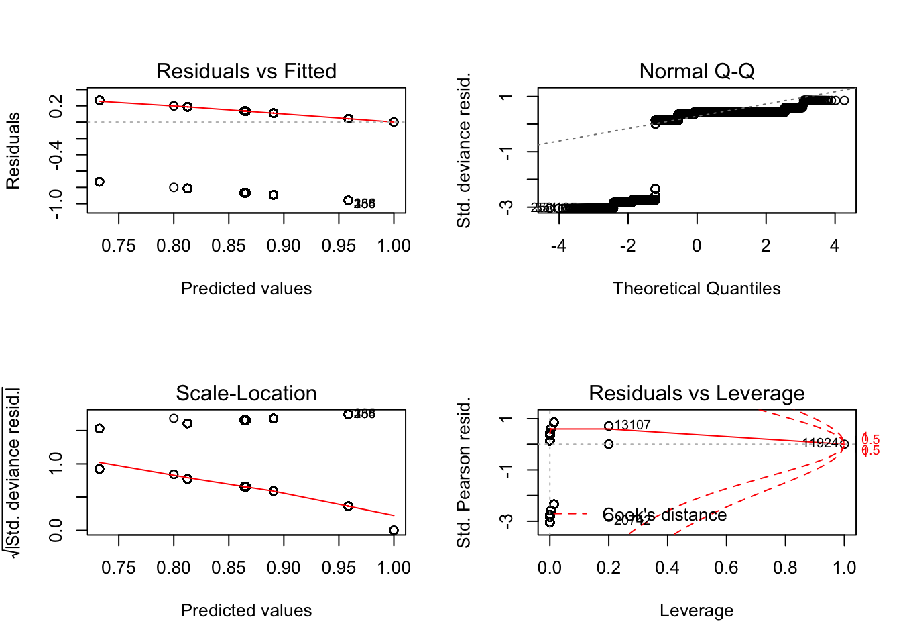
summary(living_lm1)## Length Class Mode
## 0 NULL NULLbroom::glance(living_lm2)## # A tibble: 0 x 0broom::tidy(living_lm2)## # A tibble: 0 x 0living_lm3 <-
glm(living ~ insurance, data = admissions_death) %>%
plot()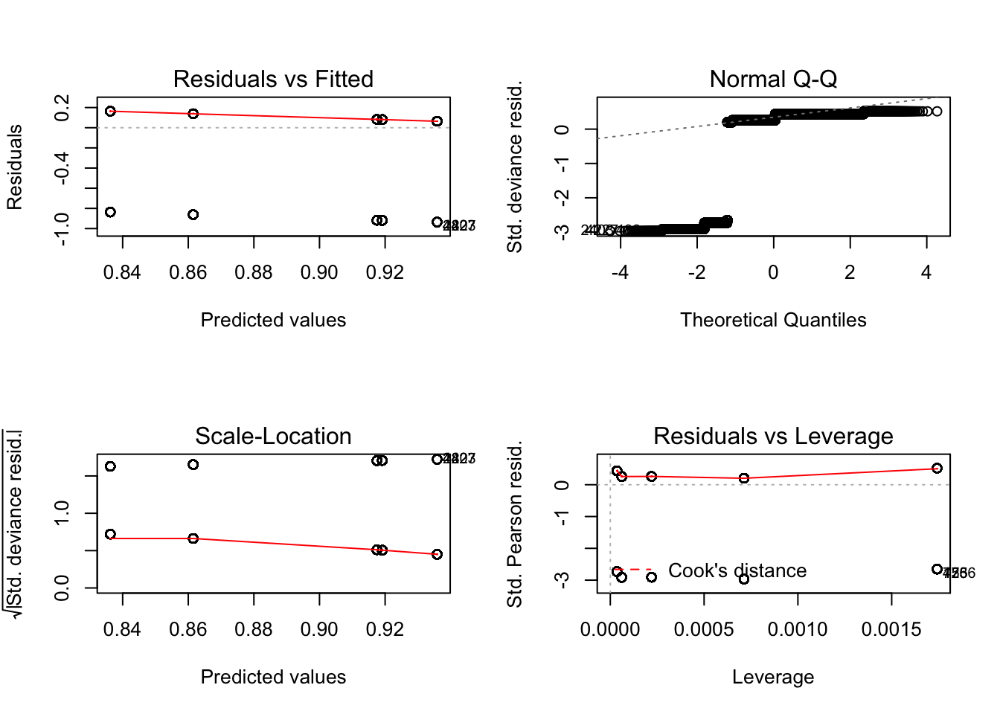
summary(living_lm3)## Length Class Mode
## 0 NULL NULLbroom::glance(living_lm3)## # A tibble: 0 x 0broom::tidy(living_lm3)## # A tibble: 0 x 0living_lm4 <-
glm(living ~ language, data = na.omit(select(admissions_death, living, language))) %>%
plot()## Warning: not plotting observations with leverage one:
## 266, 776, 2885, 4400, 4417, 7656, 19568, 20593, 25126## Warning: not plotting observations with leverage one:
## 266, 776, 2885, 4400, 4417, 7656, 19568, 20593, 25126## Warning in sqrt(crit * p * (1 - hh)/hh): NaNs produced
## Warning in sqrt(crit * p * (1 - hh)/hh): NaNs produced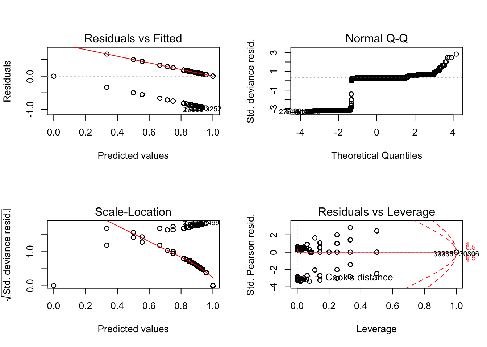
summary(living_lm4)## Length Class Mode
## 0 NULL NULLbroom::glance(living_lm4)## # A tibble: 0 x 0broom::tidy(living_lm4)## # A tibble: 0 x 0living_lm5 <-
glm(living ~ religion, data = admissions_death) %>%
plot()## Warning: not plotting observations with leverage one:
## 16992## Warning: not plotting observations with leverage one:
## 16992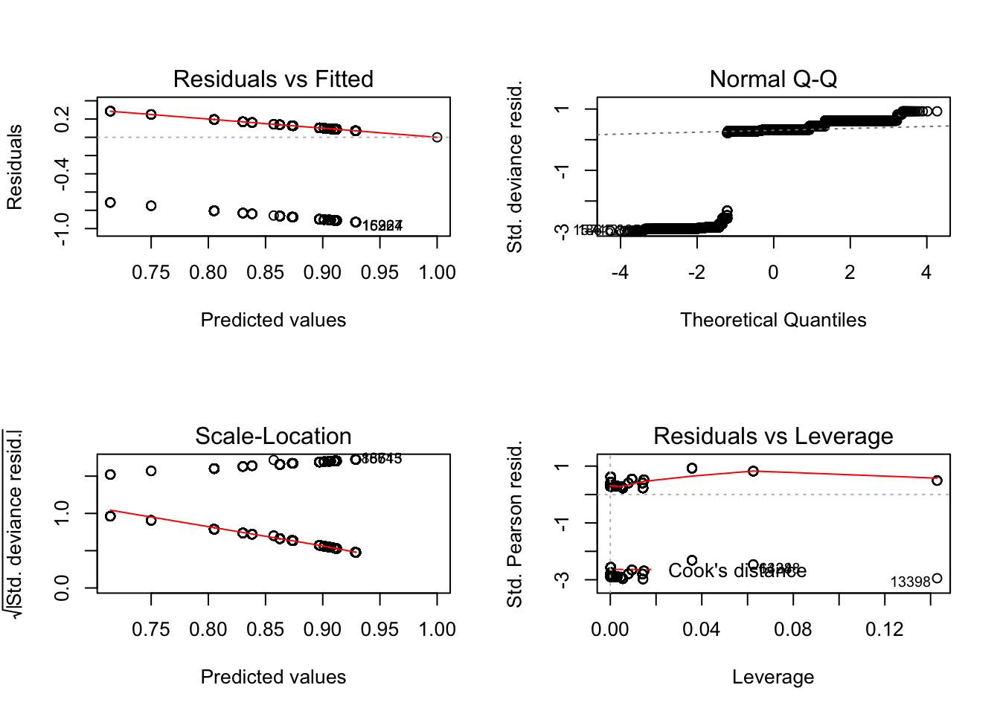
summary(living_lm5)## Length Class Mode
## 0 NULL NULLbroom::glance(living_lm5)## # A tibble: 0 x 0broom::tidy(living_lm5)## # A tibble: 0 x 0living_lm6 <-
glm(living ~ marital_status, data = admissions_death) %>%
plot()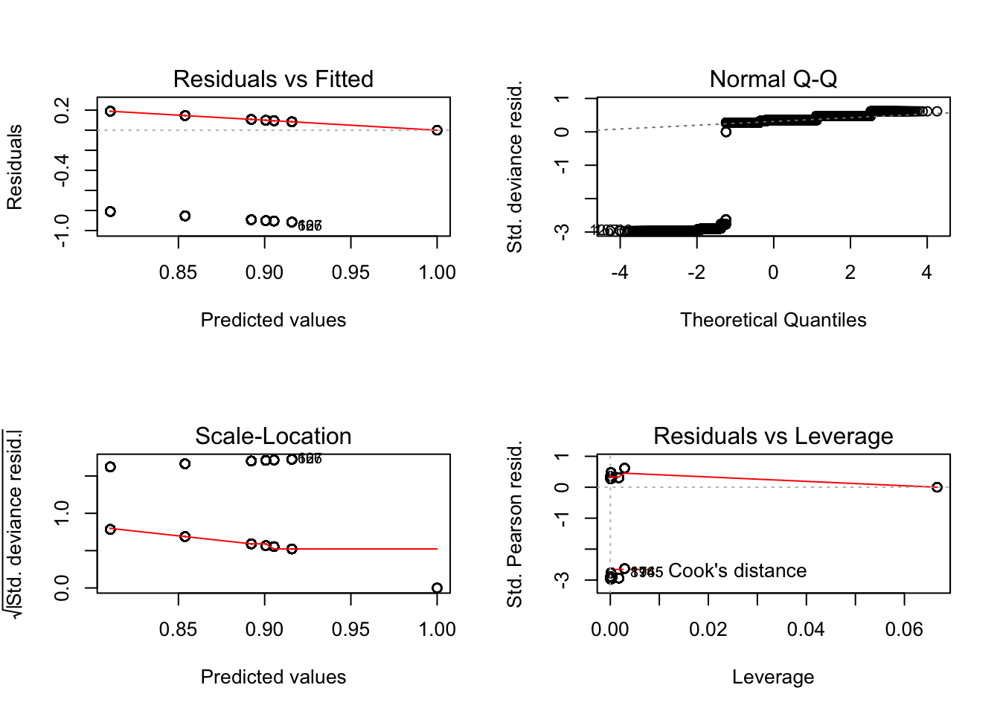
summary(living_lm6)## Length Class Mode
## 0 NULL NULLbroom::glance(living_lm6)## # A tibble: 0 x 0broom::tidy(living_lm6)## # A tibble: 0 x 0living_lm7 <-
glm(living ~ ethnicity, data = admissions_death) %>%
plot()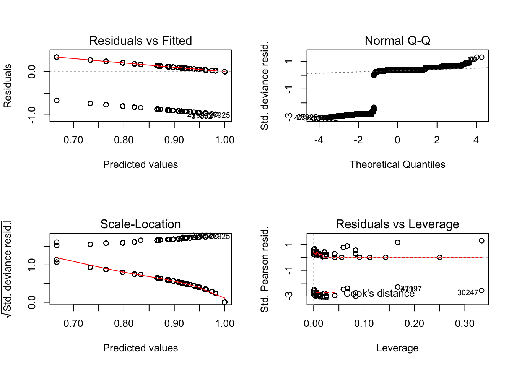
summary(living_lm7)## Length Class Mode
## 0 NULL NULLbroom::glance(living_lm7)## # A tibble: 0 x 0broom::tidy(living_lm7)## # A tibble: 0 x 0#living_lm8 <- Too many diagnosis
# glm(living ~ diagnosis, data = admissions_death)
#summary(living_lm8)
living_lm9 <-
glm(living ~ hospital_expire_flag, data = admissions_death) %>%
plot()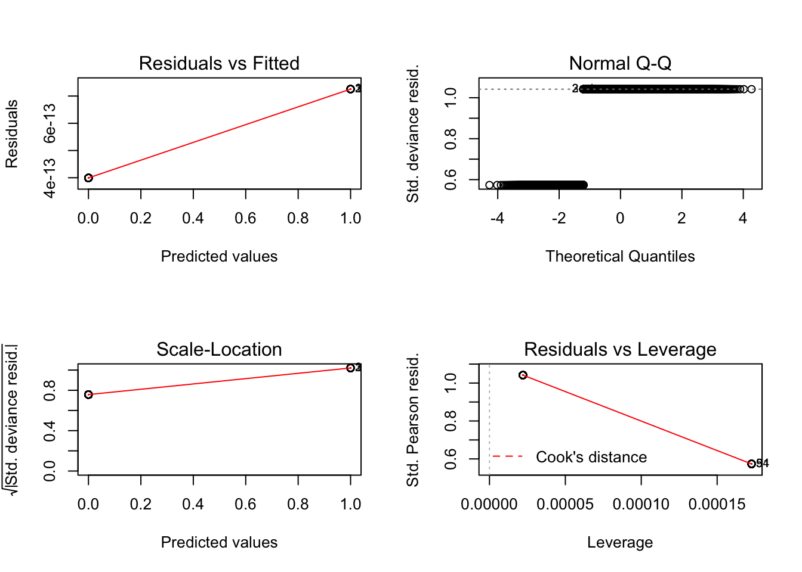
summary(living_lm9)## Length Class Mode
## 0 NULL NULLbroom::glance(living_lm9)## # A tibble: 0 x 0broom::tidy(living_lm9)## # A tibble: 0 x 0living_lm10 <-
glm(living ~ has_chartevents_data, data = admissions_death) %>%
plot()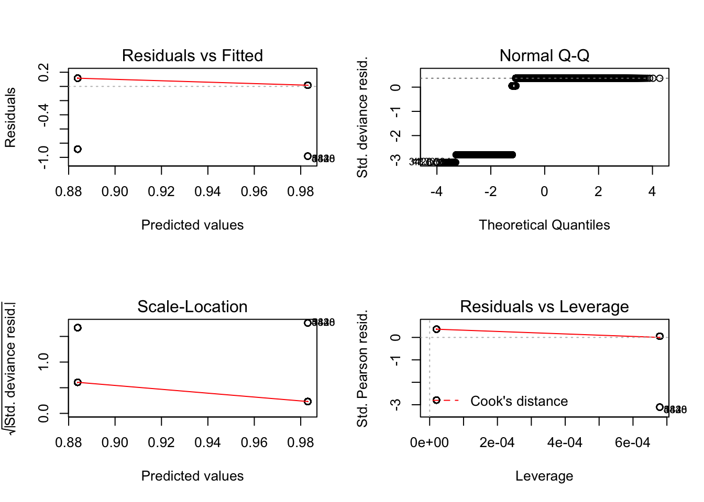
summary(living_lm10)## Length Class Mode
## 0 NULL NULLbroom::glance(living_lm10)## # A tibble: 0 x 0broom::tidy(living_lm10)## # A tibble: 0 x 0living_lm11 <-
glm(living ~ hospitaltime, data = admissions_death) %>%
plot()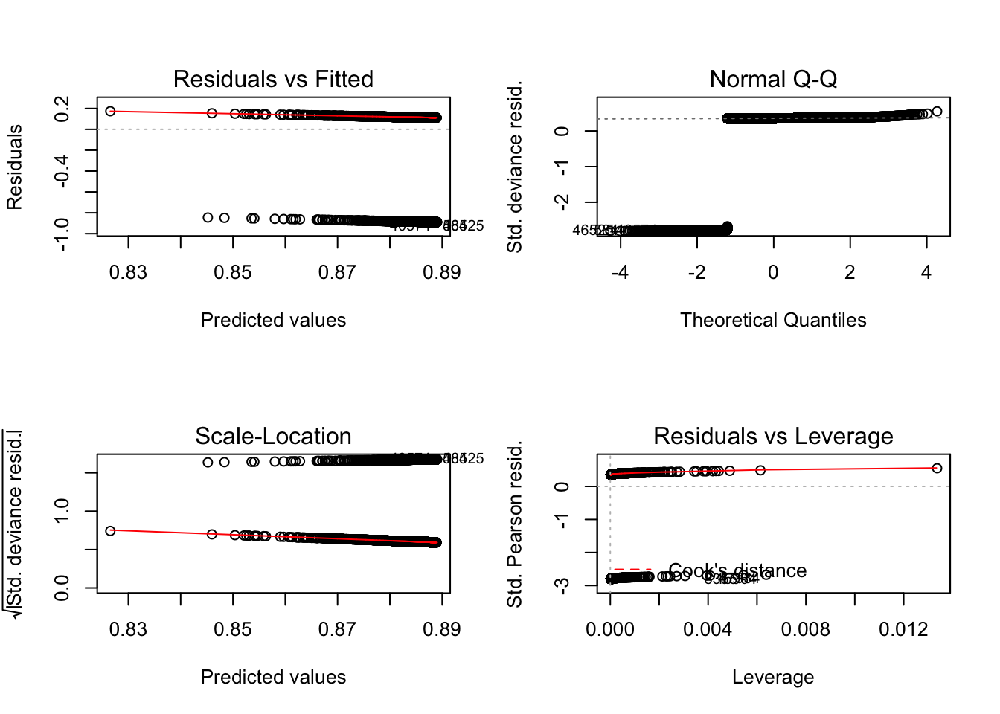
summary(living_lm11)## Length Class Mode
## 0 NULL NULLbroom::glance(living_lm11)## # A tibble: 0 x 0broom::tidy(living_lm11)## # A tibble: 0 x 0living_lm12 <-
glm(living ~ edtime, data = na.omit(select(admissions_death, living, edtime))) %>%
plot()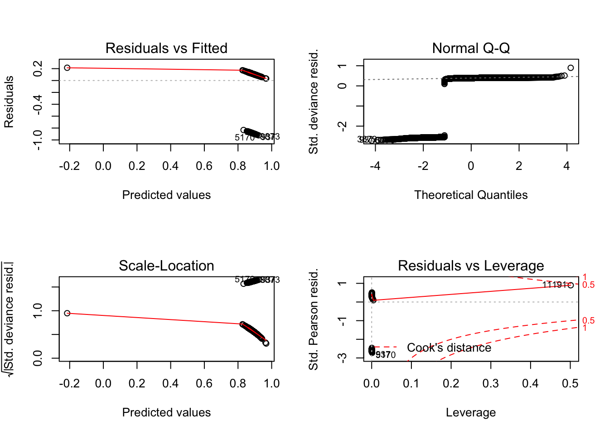
summary(living_lm12)## Length Class Mode
## 0 NULL NULLbroom::glance(living_lm12)## # A tibble: 0 x 0broom::tidy(living_lm12)## # A tibble: 0 x 0#MLR
living_mlr <-
glm(living ~ admission_type + admission_location + insurance + language + religion + marital_status + ethnicity + hospital_expire_flag + has_chartevents_data + hospitaltime + edtime, data = admissions_death)
broom::glance(living_mlr)
# Do more regression analysis
coefficients(living_mlr)
confint(living_mlr)
fitted(living_mlr)
residuals(living_mlr)
anova(living_mlr)
vcov(living_mlr)
###backward elimination
#Backward elimination: take out non-significant variables ’one at a time’ starting with the highest p-value
step1 <- update(living_mlr, . ~. -admission_type)
broom::glance(step1)
# remove
step2 <- update(living_mlr, . ~. -admission_type-admission_location)
broom::glance(step2)
#keep
step3 <- update(living_mlr, . ~. -admission_type-insurance)
broom::glance(step3)
#keep
step4 <- update(living_mlr, . ~. -admission_type-language)
broom::glance(step4)
#remove
step5 <- update(living_mlr, . ~. -admission_type-language-religion)
broom::glance(step5)
#keep
step6 <- update(living_mlr, . ~. -admission_type-language-marital_status)
broom::glance(step6)
#keep
step7 <- update(living_mlr, . ~. -admission_type-language-ethnicity)
broom::glance(step7)
#keep
step8 <- update(living_mlr, . ~. -admission_type-language-hospital_expire_flag)
broom::glance(step8)
#keep
step9 <- update(living_mlr, . ~. -admission_type-language-has_chartevents_data)
broom::glance(step9)
#keep
step10 <- update(living_mlr, . ~. -admission_type-language-hospitaltime)
broom::glance(step10)
#keep
step11 <- update(living_mlr, . ~. -admission_type-language-edtime)
broom::glance(step11)
#keep\(\hat{Living}\) = \(\hat{\beta_0}\) + \(\hat{\beta_1}\) Admission.Location + \(\hat{\beta_2}\) Insurance + \(\hat{\beta_3}\) Insurance + \(\hat{\beta_4}\) Religion + \(\hat{\beta_5}\) Marital.Status + \(\hat{\beta_6}\) Ethnicity + \(\hat{\beta_7}\) Hospital.Expire.Flag + \(\hat{\beta_8}\) Has.ChartEvents.Data + \(\hat{\beta_9}\) Hospital.Time + \(\hat{\beta_10}\) Edtime
Maybe we need this step:
# Remove NA lines
#admissions_death_nona <-
# admissions_death %>%
# select(admission_type, admission_location, insurance, religion, marital_status, ethnicity, hospitaltime, edtime) %>%
# na.omit()
#MLR with no NAs
#living_mlr_nona <-
# glm(living ~ admission_type + admission_location + insurance + language + religion + marital_status + ethnicity + hospital_expire_flag + has_chartevents_data + hospitaltime + edtime, data = admissions_death_nona)
#summary(living_mlr_nona)
#broom::glance(living_mlr_nona)
#broom::tidy(living_mlr_nona)# Already installed openfda data
# Load OpenFDA
library(openfda)
library(jsonlite)##
## Attaching package: 'jsonlite'## The following object is masked from 'package:purrr':
##
## flattenfda <-
fromJSON("https://api.fda.gov/drug/event.json") %>%
janitor::clean_names()
names(fda$results)## [1] "receiptdateformat" "receiver"
## [3] "companynumb" "receivedateformat"
## [5] "primarysource" "seriousnessother"
## [7] "transmissiondateformat" "fulfillexpeditecriteria"
## [9] "safetyreportid" "sender"
## [11] "receivedate" "patient"
## [13] "seriousnesshospitalization" "transmissiondate"
## [15] "serious" "receiptdate"There are 16 observations in the event dataset under drug, they are: receiptdateformat, receiver, companynumb, receivedateformat, primarysource, seriousnessother, transmissiondateformat, fulfillexpeditecriteria, safetyreportid, sender, receivedate, patient, seriousnesshospitalization, transmissiondate, serious, receiptdate.
Let’s take a look at the combination of MIMIC data and ICU together(for we want to know the ICU time since it is more critical for mortality)
icu <-
read_csv("./database/data/icu_detail.csv") %>%
janitor::clean_names()## Parsed with column specification:
## cols(
## subject_id = col_double(),
## hadm_id = col_double(),
## icustay_id = col_double(),
## gender = col_character(),
## dod = col_datetime(format = ""),
## admittime = col_datetime(format = ""),
## dischtime = col_datetime(format = ""),
## los_hospital = col_double(),
## admission_age = col_double(),
## ethnicity = col_character(),
## admission_type = col_character(),
## hospital_expire_flag = col_double(),
## hospstay_seq = col_double(),
## first_hosp_stay = col_logical(),
## intime = col_datetime(format = ""),
## outtime = col_datetime(format = ""),
## los_icu = col_double(),
## icustay_seq = col_double(),
## first_icu_stay = col_logical()
## )# See what is the types of columns in icu dataset
output = vector("list", length = 19)
for (i in 1:19) {
output[[i]] = class(icu[[i]])
}Let’s combine these two dataset so we can visualize it correctly
total_patient <-
merge(admissions_death, icu, by="hadm_id") %>%
as.tibble()
#mutate icu time
total_patient <-
mutate(total_patient, icutime = outtime - intime)
skimr::skim(total_patient) %>%
knitr::kable()| variable | type | stat | level | value | formatted |
|---|---|---|---|---|---|
| hadm_id | numeric | missing | .all | 0.000000e+00 | 0 |
| hadm_id | numeric | complete | .all | 5.321900e+04 | 53219 |
| hadm_id | numeric | n | .all | 5.321900e+04 | 53219 |
| hadm_id | numeric | mean | .all | 1.499624e+05 | 149962.39 |
| hadm_id | numeric | sd | .all | 2.893430e+04 | 28934.3 |
| hadm_id | numeric | p0 | .all | 1.000010e+05 | 1e+05 |
| hadm_id | numeric | p25 | .all | 1.248880e+05 | 124888 |
| hadm_id | numeric | p50 | .all | 1.499790e+05 | 149979 |
| hadm_id | numeric | p75 | .all | 1.750600e+05 | 175060 |
| hadm_id | numeric | p100 | .all | 1.999990e+05 | 2e+05 |
| hadm_id | numeric | hist | .all | NA | ▇▇▇▇▇▇▇▇ |
| row_id | numeric | missing | .all | 0.000000e+00 | 0 |
| row_id | numeric | complete | .all | 5.321900e+04 | 53219 |
| row_id | numeric | n | .all | 5.321900e+04 | 53219 |
| row_id | numeric | mean | .all | 3.115956e+04 | 31159.56 |
| row_id | numeric | sd | .all | 1.720859e+04 | 17208.59 |
| row_id | numeric | p0 | .all | 2.000000e+00 | 2 |
| row_id | numeric | p25 | .all | 1.622450e+04 | 16224.5 |
| row_id | numeric | p50 | .all | 3.251400e+04 | 32514 |
| row_id | numeric | p75 | .all | 4.624850e+04 | 46248.5 |
| row_id | numeric | p100 | .all | 5.897600e+04 | 58976 |
| row_id | numeric | hist | .all | NA | ▆▆▆▆▇▇▇▇ |
| subject_id.x | numeric | missing | .all | 0.000000e+00 | 0 |
| subject_id.x | numeric | complete | .all | 5.321900e+04 | 53219 |
| subject_id.x | numeric | n | .all | 5.321900e+04 | 53219 |
| subject_id.x | numeric | mean | .all | 3.665625e+04 | 36656.25 |
| subject_id.x | numeric | sd | .all | 2.898717e+04 | 28987.17 |
| subject_id.x | numeric | p0 | .all | 3.000000e+00 | 3 |
| subject_id.x | numeric | p25 | .all | 1.322750e+04 | 13227.5 |
| subject_id.x | numeric | p50 | .all | 2.658200e+04 | 26582 |
| subject_id.x | numeric | p75 | .all | 5.988950e+04 | 59889.5 |
| subject_id.x | numeric | p100 | .all | 9.999900e+04 | 99999 |
| subject_id.x | numeric | hist | .all | NA | ▇▇▅▂▃▂▂▃ |
| admittime.x | POSIXct | missing | .all | 0.000000e+00 | 0 |
| admittime.x | POSIXct | complete | .all | 5.321900e+04 | 53219 |
| admittime.x | POSIXct | n | .all | 5.321900e+04 | 53219 |
| admittime.x | POSIXct | min | .all | 4.116082e+09 | 2100-06-07 |
| admittime.x | POSIXct | max | .all | 7.593412e+09 | 2210-08-17 |
| admittime.x | POSIXct | median | .all | 5.714706e+09 | 2151-02-03 |
| admittime.x | POSIXct | n_unique | .all | 4.933100e+04 | 49331 |
| dischtime.x | POSIXct | missing | .all | 0.000000e+00 | 0 |
| dischtime.x | POSIXct | complete | .all | 5.321900e+04 | 53219 |
| dischtime.x | POSIXct | n | .all | 5.321900e+04 | 53219 |
| dischtime.x | POSIXct | min | .all | 4.116244e+09 | 2100-06-09 |
| dischtime.x | POSIXct | max | .all | 7.594026e+09 | 2210-08-24 |
| dischtime.x | POSIXct | median | .all | 5.716205e+09 | 2151-02-20 |
| dischtime.x | POSIXct | n_unique | .all | 4.937500e+04 | 49375 |
| deathtime | POSIXct | missing | .all | 4.668600e+04 | 46686 |
| deathtime | POSIXct | complete | .all | 6.533000e+03 | 6533 |
| deathtime | POSIXct | n | .all | 5.321900e+04 | 53219 |
| deathtime | POSIXct | min | .all | 4.117076e+09 | 2100-06-19 |
| deathtime | POSIXct | max | .all | 7.513559e+09 | 2208-02-05 |
| deathtime | POSIXct | median | .all | 5.699749e+09 | 2150-08-14 |
| deathtime | POSIXct | n_unique | .all | 5.732000e+03 | 5732 |
| admission_type.x | character | missing | .all | 0.000000e+00 | 0 |
| admission_type.x | character | complete | .all | 5.321900e+04 | 53219 |
| admission_type.x | character | n | .all | 5.321900e+04 | 53219 |
| admission_type.x | character | min | .all | 6.000000e+00 | 6 |
| admission_type.x | character | max | .all | 9.000000e+00 | 9 |
| admission_type.x | character | empty | .all | 0.000000e+00 | 0 |
| admission_type.x | character | n_unique | .all | 4.000000e+00 | 4 |
| admission_location | character | missing | .all | 0.000000e+00 | 0 |
| admission_location | character | complete | .all | 5.321900e+04 | 53219 |
| admission_location | character | n | .all | 5.321900e+04 | 53219 |
| admission_location | character | min | .all | 1.700000e+01 | 17 |
| admission_location | character | max | .all | 2.500000e+01 | 25 |
| admission_location | character | empty | .all | 0.000000e+00 | 0 |
| admission_location | character | n_unique | .all | 9.000000e+00 | 9 |
| discharge_location | character | missing | .all | 0.000000e+00 | 0 |
| discharge_location | character | complete | .all | 5.321900e+04 | 53219 |
| discharge_location | character | n | .all | 5.321900e+04 | 53219 |
| discharge_location | character | min | .all | 3.000000e+00 | 3 |
| discharge_location | character | max | .all | 2.500000e+01 | 25 |
| discharge_location | character | empty | .all | 0.000000e+00 | 0 |
| discharge_location | character | n_unique | .all | 1.700000e+01 | 17 |
| insurance | character | missing | .all | 0.000000e+00 | 0 |
| insurance | character | complete | .all | 5.321900e+04 | 53219 |
| insurance | character | n | .all | 5.321900e+04 | 53219 |
| insurance | character | min | .all | 7.000000e+00 | 7 |
| insurance | character | max | .all | 1.000000e+01 | 10 |
| insurance | character | empty | .all | 0.000000e+00 | 0 |
| insurance | character | n_unique | .all | 5.000000e+00 | 5 |
| language | character | missing | .all | 1.826400e+04 | 18264 |
| language | character | complete | .all | 3.495500e+04 | 34955 |
| language | character | n | .all | 5.321900e+04 | 53219 |
| language | character | min | .all | 4.000000e+00 | 4 |
| language | character | max | .all | 4.000000e+00 | 4 |
| language | character | empty | .all | 0.000000e+00 | 0 |
| language | character | n_unique | .all | 7.500000e+01 | 75 |
| religion | character | missing | .all | 4.690000e+02 | 469 |
| religion | character | complete | .all | 5.275000e+04 | 52750 |
| religion | character | n | .all | 5.321900e+04 | 53219 |
| religion | character | min | .all | 5.000000e+00 | 5 |
| religion | character | max | .all | 2.200000e+01 | 22 |
| religion | character | empty | .all | 0.000000e+00 | 0 |
| religion | character | n_unique | .all | 2.000000e+01 | 20 |
| marital_status | character | missing | .all | 2.688000e+03 | 2688 |
| marital_status | character | complete | .all | 5.053100e+04 | 50531 |
| marital_status | character | n | .all | 5.321900e+04 | 53219 |
| marital_status | character | min | .all | 6.000000e+00 | 6 |
| marital_status | character | max | .all | 1.700000e+01 | 17 |
| marital_status | character | empty | .all | 0.000000e+00 | 0 |
| marital_status | character | n_unique | .all | 7.000000e+00 | 7 |
| ethnicity.x | character | missing | .all | 0.000000e+00 | 0 |
| ethnicity.x | character | complete | .all | 5.321900e+04 | 53219 |
| ethnicity.x | character | n | .all | 5.321900e+04 | 53219 |
| ethnicity.x | character | min | .all | 5.000000e+00 | 5 |
| ethnicity.x | character | max | .all | 5.600000e+01 | 56 |
| ethnicity.x | character | empty | .all | 0.000000e+00 | 0 |
| ethnicity.x | character | n_unique | .all | 4.100000e+01 | 41 |
| edregtime | POSIXct | missing | .all | 2.073600e+04 | 20736 |
| edregtime | POSIXct | complete | .all | 3.248300e+04 | 32483 |
| edregtime | POSIXct | n | .all | 5.321900e+04 | 53219 |
| edregtime | POSIXct | min | .all | 4.116057e+09 | 2100-06-07 |
| edregtime | POSIXct | max | .all | 7.593387e+09 | 2210-08-17 |
| edregtime | POSIXct | median | .all | 5.710052e+09 | 2150-12-11 |
| edregtime | POSIXct | n_unique | .all | 3.036200e+04 | 30362 |
| edouttime | POSIXct | missing | .all | 2.073600e+04 | 20736 |
| edouttime | POSIXct | complete | .all | 3.248300e+04 | 32483 |
| edouttime | POSIXct | n | .all | 5.321900e+04 | 53219 |
| edouttime | POSIXct | min | .all | 4.116096e+09 | 2100-06-08 |
| edouttime | POSIXct | max | .all | 7.593417e+09 | 2210-08-17 |
| edouttime | POSIXct | median | .all | 5.710071e+09 | 2150-12-11 |
| edouttime | POSIXct | n_unique | .all | 3.035100e+04 | 30351 |
| diagnosis | character | missing | .all | 0.000000e+00 | 0 |
| diagnosis | character | complete | .all | 5.321900e+04 | 53219 |
| diagnosis | character | n | .all | 5.321900e+04 | 53219 |
| diagnosis | character | min | .all | 2.000000e+00 | 2 |
| diagnosis | character | max | .all | 1.900000e+02 | 190 |
| diagnosis | character | empty | .all | 0.000000e+00 | 0 |
| diagnosis | character | n_unique | .all | 1.507100e+04 | 15071 |
| hospital_expire_flag.x | numeric | missing | .all | 0.000000e+00 | 0 |
| hospital_expire_flag.x | numeric | complete | .all | 5.321900e+04 | 53219 |
| hospital_expire_flag.x | numeric | n | .all | 5.321900e+04 | 53219 |
| hospital_expire_flag.x | numeric | mean | .all | 1.227569e-01 | 0.12 |
| hospital_expire_flag.x | numeric | sd | .all | 3.281610e-01 | 0.33 |
| hospital_expire_flag.x | numeric | p0 | .all | 0.000000e+00 | 0 |
| hospital_expire_flag.x | numeric | p25 | .all | 0.000000e+00 | 0 |
| hospital_expire_flag.x | numeric | p50 | .all | 0.000000e+00 | 0 |
| hospital_expire_flag.x | numeric | p75 | .all | 0.000000e+00 | 0 |
| hospital_expire_flag.x | numeric | p100 | .all | 1.000000e+00 | 1 |
| hospital_expire_flag.x | numeric | hist | .all | NA | ▇▁▁▁▁▁▁▁ |
| has_chartevents_data | numeric | missing | .all | 0.000000e+00 | 0 |
| has_chartevents_data | numeric | complete | .all | 5.321900e+04 | 53219 |
| has_chartevents_data | numeric | n | .all | 5.321900e+04 | 53219 |
| has_chartevents_data | numeric | mean | .all | 1.000000e+00 | 1 |
| has_chartevents_data | numeric | sd | .all | 0.000000e+00 | 0 |
| has_chartevents_data | numeric | p0 | .all | 1.000000e+00 | 1 |
| has_chartevents_data | numeric | p25 | .all | 1.000000e+00 | 1 |
| has_chartevents_data | numeric | p50 | .all | 1.000000e+00 | 1 |
| has_chartevents_data | numeric | p75 | .all | 1.000000e+00 | 1 |
| has_chartevents_data | numeric | p100 | .all | 1.000000e+00 | 1 |
| has_chartevents_data | numeric | hist | .all | NA | ▁▁▁▇▁▁▁▁ |
| living | logical | missing | .all | 0.000000e+00 | 0 |
| living | logical | complete | .all | 5.321900e+04 | 53219 |
| living | logical | n | .all | 5.321900e+04 | 53219 |
| living | logical | mean | .all | 8.772431e-01 | 0.88 |
| living | logical | count | TRUE | 4.668600e+04 | TRU: 46686 |
| living | logical | count | FALSE | 6.533000e+03 | FAL: 6533 |
| living | logical | count | NA | 0.000000e+00 | NA: 0 |
| hospitaltime | difftime | missing | .all | 0.000000e+00 | 0 |
| hospitaltime | difftime | complete | .all | 5.321900e+04 | 53219 |
| hospitaltime | difftime | n | .all | 5.321900e+04 | 53219 |
| hospitaltime | difftime | min | .all | -1.361000e+03 | -1361 mins |
| hospitaltime | difftime | max | .all | 4.243110e+05 | 424311 mins |
| hospitaltime | difftime | median | .all | 1.052300e+04 | 10523 mins |
| hospitaltime | difftime | n_unique | .all | 2.410800e+04 | 24108 |
| edtime | difftime | missing | .all | 2.073600e+04 | 20736 |
| edtime | difftime | complete | .all | 3.248300e+04 | 32483 |
| edtime | difftime | n | .all | 5.321900e+04 | 53219 |
| edtime | difftime | min | .all | -2.504940e+06 | -2504940 secs |
| edtime | difftime | max | .all | 2.536800e+05 | 253680 secs |
| edtime | difftime | median | .all | 1.776000e+04 | 17760 secs |
| edtime | difftime | n_unique | .all | 1.463000e+03 | 1463 |
| subject_id.y | numeric | missing | .all | 0.000000e+00 | 0 |
| subject_id.y | numeric | complete | .all | 5.321900e+04 | 53219 |
| subject_id.y | numeric | n | .all | 5.321900e+04 | 53219 |
| subject_id.y | numeric | mean | .all | 3.665625e+04 | 36656.25 |
| subject_id.y | numeric | sd | .all | 2.898717e+04 | 28987.17 |
| subject_id.y | numeric | p0 | .all | 3.000000e+00 | 3 |
| subject_id.y | numeric | p25 | .all | 1.322750e+04 | 13227.5 |
| subject_id.y | numeric | p50 | .all | 2.658200e+04 | 26582 |
| subject_id.y | numeric | p75 | .all | 5.988950e+04 | 59889.5 |
| subject_id.y | numeric | p100 | .all | 9.999900e+04 | 99999 |
| subject_id.y | numeric | hist | .all | NA | ▇▇▅▂▃▂▂▃ |
| icustay_id | numeric | missing | .all | 0.000000e+00 | 0 |
| icustay_id | numeric | complete | .all | 5.321900e+04 | 53219 |
| icustay_id | numeric | n | .all | 5.321900e+04 | 53219 |
| icustay_id | numeric | mean | .all | 2.500211e+05 | 250021.09 |
| icustay_id | numeric | sd | .all | 2.890967e+04 | 28909.67 |
| icustay_id | numeric | p0 | .all | 2.000010e+05 | 2e+05 |
| icustay_id | numeric | p25 | .all | 2.249665e+05 | 224966.5 |
| icustay_id | numeric | p50 | .all | 2.500190e+05 | 250019 |
| icustay_id | numeric | p75 | .all | 2.750700e+05 | 275070 |
| icustay_id | numeric | p100 | .all | 2.999990e+05 | 3e+05 |
| icustay_id | numeric | hist | .all | NA | ▇▇▇▇▇▇▇▇ |
| gender | character | missing | .all | 0.000000e+00 | 0 |
| gender | character | complete | .all | 5.321900e+04 | 53219 |
| gender | character | n | .all | 5.321900e+04 | 53219 |
| gender | character | min | .all | 1.000000e+00 | 1 |
| gender | character | max | .all | 1.000000e+00 | 1 |
| gender | character | empty | .all | 0.000000e+00 | 0 |
| gender | character | n_unique | .all | 2.000000e+00 | 2 |
| dod | POSIXct | missing | .all | 2.939300e+04 | 29393 |
| dod | POSIXct | complete | .all | 2.382600e+04 | 23826 |
| dod | POSIXct | n | .all | 5.321900e+04 | 53219 |
| dod | POSIXct | min | .all | 4.117061e+09 | 2100-06-19 |
| dod | POSIXct | max | .all | 7.619026e+09 | 2211-06-10 |
| dod | POSIXct | median | .all | 5.759179e+09 | 2152-07-02 |
| dod | POSIXct | n_unique | .all | 1.284300e+04 | 12843 |
| admittime.y | POSIXct | missing | .all | 0.000000e+00 | 0 |
| admittime.y | POSIXct | complete | .all | 5.321900e+04 | 53219 |
| admittime.y | POSIXct | n | .all | 5.321900e+04 | 53219 |
| admittime.y | POSIXct | min | .all | 4.116024e+09 | 2100-06-07 |
| admittime.y | POSIXct | max | .all | 7.593365e+09 | 2210-08-17 |
| admittime.y | POSIXct | median | .all | 5.714687e+09 | 2151-02-03 |
| admittime.y | POSIXct | n_unique | .all | 2.732500e+04 | 27325 |
| dischtime.y | POSIXct | missing | .all | 0.000000e+00 | 0 |
| dischtime.y | POSIXct | complete | .all | 5.321900e+04 | 53219 |
| dischtime.y | POSIXct | n | .all | 5.321900e+04 | 53219 |
| dischtime.y | POSIXct | min | .all | 4.116197e+09 | 2100-06-09 |
| dischtime.y | POSIXct | max | .all | 7.593970e+09 | 2210-08-24 |
| dischtime.y | POSIXct | median | .all | 5.716156e+09 | 2151-02-20 |
| dischtime.y | POSIXct | n_unique | .all | 2.693000e+04 | 26930 |
| los_hospital | numeric | missing | .all | 0.000000e+00 | 0 |
| los_hospital | numeric | complete | .all | 5.321900e+04 | 53219 |
| los_hospital | numeric | n | .all | 5.321900e+04 | 53219 |
| los_hospital | numeric | mean | .all | 1.129353e+01 | 11.29 |
| los_hospital | numeric | sd | .all | 1.331059e+01 | 13.31 |
| los_hospital | numeric | p0 | .all | -9.451000e-01 | -0.95 |
| los_hospital | numeric | p25 | .all | 4.191000e+00 | 4.19 |
| los_hospital | numeric | p50 | .all | 7.307600e+00 | 7.31 |
| los_hospital | numeric | p75 | .all | 1.334380e+01 | 13.34 |
| los_hospital | numeric | p100 | .all | 2.946604e+02 | 294.66 |
| los_hospital | numeric | hist | .all | NA | ▇▁▁▁▁▁▁▁ |
| admission_age | numeric | missing | .all | 0.000000e+00 | 0 |
| admission_age | numeric | complete | .all | 5.321900e+04 | 53219 |
| admission_age | numeric | n | .all | 5.321900e+04 | 53219 |
| admission_age | numeric | mean | .all | 7.439396e+01 | 74.39 |
| admission_age | numeric | sd | .all | 5.489341e+01 | 54.89 |
| admission_age | numeric | p0 | .all | 4.000000e-04 | 4e-04 |
| admission_age | numeric | p25 | .all | 5.259940e+01 | 52.6 |
| admission_age | numeric | p50 | .all | 6.565990e+01 | 65.66 |
| admission_age | numeric | p75 | .all | 7.776540e+01 | 77.77 |
| admission_age | numeric | p100 | .all | 3.115610e+02 | 311.56 |
| admission_age | numeric | hist | .all | NA | ▁▇▂▁▁▁▁▁ |
| ethnicity.y | character | missing | .all | 0.000000e+00 | 0 |
| ethnicity.y | character | complete | .all | 5.321900e+04 | 53219 |
| ethnicity.y | character | n | .all | 5.321900e+04 | 53219 |
| ethnicity.y | character | min | .all | 5.000000e+00 | 5 |
| ethnicity.y | character | max | .all | 5.600000e+01 | 56 |
| ethnicity.y | character | empty | .all | 0.000000e+00 | 0 |
| ethnicity.y | character | n_unique | .all | 4.100000e+01 | 41 |
| admission_type.y | character | missing | .all | 0.000000e+00 | 0 |
| admission_type.y | character | complete | .all | 5.321900e+04 | 53219 |
| admission_type.y | character | n | .all | 5.321900e+04 | 53219 |
| admission_type.y | character | min | .all | 6.000000e+00 | 6 |
| admission_type.y | character | max | .all | 9.000000e+00 | 9 |
| admission_type.y | character | empty | .all | 0.000000e+00 | 0 |
| admission_type.y | character | n_unique | .all | 4.000000e+00 | 4 |
| hospital_expire_flag.y | numeric | missing | .all | 0.000000e+00 | 0 |
| hospital_expire_flag.y | numeric | complete | .all | 5.321900e+04 | 53219 |
| hospital_expire_flag.y | numeric | n | .all | 5.321900e+04 | 53219 |
| hospital_expire_flag.y | numeric | mean | .all | 1.227569e-01 | 0.12 |
| hospital_expire_flag.y | numeric | sd | .all | 3.281610e-01 | 0.33 |
| hospital_expire_flag.y | numeric | p0 | .all | 0.000000e+00 | 0 |
| hospital_expire_flag.y | numeric | p25 | .all | 0.000000e+00 | 0 |
| hospital_expire_flag.y | numeric | p50 | .all | 0.000000e+00 | 0 |
| hospital_expire_flag.y | numeric | p75 | .all | 0.000000e+00 | 0 |
| hospital_expire_flag.y | numeric | p100 | .all | 1.000000e+00 | 1 |
| hospital_expire_flag.y | numeric | hist | .all | NA | ▇▁▁▁▁▁▁▁ |
| hospstay_seq | numeric | missing | .all | 0.000000e+00 | 0 |
| hospstay_seq | numeric | complete | .all | 5.321900e+04 | 53219 |
| hospstay_seq | numeric | n | .all | 5.321900e+04 | 53219 |
| hospstay_seq | numeric | mean | .all | 1.480148e+00 | 1.48 |
| hospstay_seq | numeric | sd | .all | 1.609203e+00 | 1.61 |
| hospstay_seq | numeric | p0 | .all | 1.000000e+00 | 1 |
| hospstay_seq | numeric | p25 | .all | 1.000000e+00 | 1 |
| hospstay_seq | numeric | p50 | .all | 1.000000e+00 | 1 |
| hospstay_seq | numeric | p75 | .all | 1.000000e+00 | 1 |
| hospstay_seq | numeric | p100 | .all | 4.100000e+01 | 41 |
| hospstay_seq | numeric | hist | .all | NA | ▇▁▁▁▁▁▁▁ |
| first_hosp_stay | logical | missing | .all | 0.000000e+00 | 0 |
| first_hosp_stay | logical | complete | .all | 5.321900e+04 | 53219 |
| first_hosp_stay | logical | n | .all | 5.321900e+04 | 53219 |
| first_hosp_stay | logical | mean | .all | 7.775982e-01 | 0.78 |
| first_hosp_stay | logical | count | TRUE | 4.138300e+04 | TRU: 41383 |
| first_hosp_stay | logical | count | FALSE | 1.183600e+04 | FAL: 11836 |
| first_hosp_stay | logical | count | NA | 0.000000e+00 | NA: 0 |
| intime | POSIXct | missing | .all | 0.000000e+00 | 0 |
| intime | POSIXct | complete | .all | 5.321900e+04 | 53219 |
| intime | POSIXct | n | .all | 5.321900e+04 | 53219 |
| intime | POSIXct | min | .all | 4.116024e+09 | 2100-06-07 |
| intime | POSIXct | max | .all | 7.593451e+09 | 2210-08-18 |
| intime | POSIXct | median | .all | 5.714687e+09 | 2151-02-03 |
| intime | POSIXct | n_unique | .all | 2.825600e+04 | 28256 |
| outtime | POSIXct | missing | .all | 3.000000e+00 | 3 |
| outtime | POSIXct | complete | .all | 5.321600e+04 | 53216 |
| outtime | POSIXct | n | .all | 5.321900e+04 | 53219 |
| outtime | POSIXct | min | .all | 4.116110e+09 | 2100-06-08 |
| outtime | POSIXct | max | .all | 7.593624e+09 | 2210-08-20 |
| outtime | POSIXct | median | .all | 5.715508e+09 | 2151-02-12 |
| outtime | POSIXct | n_unique | .all | 2.833500e+04 | 28335 |
| los_icu | numeric | missing | .all | 3.000000e+00 | 3 |
| los_icu | numeric | complete | .all | 5.321600e+04 | 53216 |
| los_icu | numeric | n | .all | 5.321900e+04 | 53219 |
| los_icu | numeric | mean | .all | 4.210659e+00 | 4.21 |
| los_icu | numeric | sd | .all | 6.453207e+00 | 6.45 |
| los_icu | numeric | p0 | .all | 1.000000e-04 | 1e-04 |
| los_icu | numeric | p25 | .all | 1.207800e+00 | 1.21 |
| los_icu | numeric | p50 | .all | 2.147750e+00 | 2.15 |
| los_icu | numeric | p75 | .all | 4.213625e+00 | 4.21 |
| los_icu | numeric | p100 | .all | 1.730725e+02 | 173.07 |
| los_icu | numeric | hist | .all | NA | ▇▁▁▁▁▁▁▁ |
| icustay_seq | numeric | missing | .all | 0.000000e+00 | 0 |
| icustay_seq | numeric | complete | .all | 5.321900e+04 | 53219 |
| icustay_seq | numeric | n | .all | 5.321900e+04 | 53219 |
| icustay_seq | numeric | mean | .all | 1.079314e+00 | 1.08 |
| icustay_seq | numeric | sd | .all | 3.193150e-01 | 0.32 |
| icustay_seq | numeric | p0 | .all | 1.000000e+00 | 1 |
| icustay_seq | numeric | p25 | .all | 1.000000e+00 | 1 |
| icustay_seq | numeric | p50 | .all | 1.000000e+00 | 1 |
| icustay_seq | numeric | p75 | .all | 1.000000e+00 | 1 |
| icustay_seq | numeric | p100 | .all | 7.000000e+00 | 7 |
| icustay_seq | numeric | hist | .all | NA | ▇▁▁▁▁▁▁▁ |
| first_icu_stay | logical | missing | .all | 0.000000e+00 | 0 |
| first_icu_stay | logical | complete | .all | 5.321900e+04 | 53219 |
| first_icu_stay | logical | n | .all | 5.321900e+04 | 53219 |
| first_icu_stay | logical | mean | .all | 9.320731e-01 | 0.93 |
| first_icu_stay | logical | count | TRUE | 4.960400e+04 | TRU: 49604 |
| first_icu_stay | logical | count | FALSE | 3.615000e+03 | FAL: 3615 |
| first_icu_stay | logical | count | NA | 0.000000e+00 | NA: 0 |
| icutime | difftime | missing | .all | 3.000000e+00 | 3 |
| icutime | difftime | complete | .all | 5.321600e+04 | 53216 |
| icutime | difftime | n | .all | 5.321900e+04 | 53219 |
| icutime | difftime | min | .all | 0.000000e+00 | 0 secs |
| icutime | difftime | max | .all | 1.494720e+07 | 14947200 secs |
| icutime | difftime | median | .all | 1.728000e+05 | 172800 secs |
| icutime | difftime | n_unique | .all | 2.230000e+02 | 223 |
head(total_patient) %>%
knitr::kable()| hadm_id | row_id | subject_id.x | admittime.x | dischtime.x | deathtime | admission_type.x | admission_location | discharge_location | insurance | language | religion | marital_status | ethnicity.x | edregtime | edouttime | diagnosis | hospital_expire_flag.x | has_chartevents_data | living | hospitaltime | edtime | subject_id.y | icustay_id | gender | dod | admittime.y | dischtime.y | los_hospital | admission_age | ethnicity.y | admission_type.y | hospital_expire_flag.y | hospstay_seq | first_hosp_stay | intime | outtime | los_icu | icustay_seq | first_icu_stay | icutime |
|---|---|---|---|---|---|---|---|---|---|---|---|---|---|---|---|---|---|---|---|---|---|---|---|---|---|---|---|---|---|---|---|---|---|---|---|---|---|---|---|---|
| 100001 | 45749 | 58526 | 2117-09-11 11:46:00 | 2117-09-17 16:45:00 | NA | EMERGENCY | CLINIC REFERRAL/PREMATURE | HOME | Private | ENGL | PROTESTANT QUAKER | DIVORCED | WHITE | 2117-09-11 08:59:00 | 2117-09-11 12:35:00 | DIABETIC KETOACIDOSIS | 0 | 1 | TRUE | 8939 mins | 12960 secs | 58526 | 275225 | F | NA | 2117-09-11 04:00:00 | 2117-09-17 04:00:00 | 6.2076 | 35.4765 | WHITE | EMERGENCY | 0 | 1 | TRUE | 2117-09-11 04:00:00 | 2117-09-15 04:00:00 | 4.2567 | 1 | TRUE | 345600 secs |
| 100003 | 44463 | 54610 | 2150-04-17 15:34:00 | 2150-04-21 17:30:00 | NA | EMERGENCY | EMERGENCY ROOM ADMIT | HOME | Private | ENGL | NOT SPECIFIED | SINGLE | WHITE | 2150-04-17 13:10:00 | 2150-04-17 17:47:00 | UPPER GI BLEED | 0 | 1 | TRUE | 5876 mins | 16620 secs | 54610 | 209281 | M | 2150-12-28 05:00:00 | 2150-04-17 04:00:00 | 2150-04-21 04:00:00 | 4.0806 | 59.9127 | WHITE | EMERGENCY | 0 | 1 | TRUE | 2150-04-17 04:00:00 | 2150-04-19 04:00:00 | 1.9425 | 1 | TRUE | 172800 secs |
| 100006 | 12108 | 9895 | 2108-04-06 15:49:00 | 2108-04-18 17:18:00 | NA | EMERGENCY | EMERGENCY ROOM ADMIT | HOME | Private | NA | NOT SPECIFIED | SINGLE | BLACK/AFRICAN AMERICAN | 2108-04-06 11:39:00 | 2108-04-06 17:56:00 | COPD FLARE | 0 | 1 | TRUE | 17369 mins | 22620 secs | 9895 | 291788 | F | 2109-10-24 04:00:00 | 2108-04-06 04:00:00 | 2108-04-18 04:00:00 | 12.0618 | 48.9173 | BLACK/AFRICAN AMERICAN | EMERGENCY | 0 | 1 | TRUE | 2108-04-06 04:00:00 | 2108-04-11 04:00:00 | 4.9776 | 1 | TRUE | 432000 secs |
| 100007 | 28086 | 23018 | 2145-03-31 05:33:00 | 2145-04-07 12:40:00 | NA | EMERGENCY | EMERGENCY ROOM ADMIT | HOME | Private | NA | JEWISH | MARRIED | WHITE | 2145-03-30 20:43:00 | 2145-03-31 06:08:00 | BOWEL OBSTRUCTION | 0 | 1 | TRUE | 10507 mins | 33900 secs | 23018 | 217937 | F | NA | 2145-03-31 04:00:00 | 2145-04-07 04:00:00 | 7.2965 | 73.8229 | WHITE | EMERGENCY | 0 | 1 | TRUE | 2145-03-31 04:00:00 | 2145-04-04 04:00:00 | 4.0998 | 1 | TRUE | 345600 secs |
| 100009 | 671 | 533 | 2162-05-16 15:56:00 | 2162-05-21 13:37:00 | NA | EMERGENCY | TRANSFER FROM HOSP/EXTRAM | HOME HEALTH CARE | Private | NA | CATHOLIC | MARRIED | WHITE | NA | NA | CORONARY ARTERY DISEASE | 0 | 1 | TRUE | 7061 mins | NA | 533 | 253656 | M | NA | 2162-05-16 04:00:00 | 2162-05-21 04:00:00 | 4.9035 | 60.7971 | WHITE | EMERGENCY | 0 | 1 | TRUE | 2162-05-17 04:00:00 | 2162-05-19 04:00:00 | 2.4908 | 1 | TRUE | 172800 secs |
| 100010 | 44865 | 55853 | 2109-12-10 07:15:00 | 2109-12-14 16:45:00 | NA | ELECTIVE | PHYS REFERRAL/NORMAL DELI | HOME | Private | ENGL | EPISCOPALIAN | MARRIED | WHITE | NA | NA | RENAL MASS LEFT/SDA | 0 | 1 | TRUE | 6330 mins | NA | 55853 | 271147 | F | NA | 2109-12-10 05:00:00 | 2109-12-14 05:00:00 | 4.3958 | 54.5208 | WHITE | ELECTIVE | 0 | 1 | TRUE | 2109-12-10 05:00:00 | 2109-12-12 05:00:00 | 1.5940 | 1 | TRUE | 172800 secs |
Let’s see some plots from these two datasets
hospitaltimeplot <- ggplot(data = total_patient, aes(x = diagnosis, y = hospitaltime)) +
geom_histogram()
icutimeplot <- ggplot(data = total_patient, aes(x = diagnosis, y = icutime)) +
geom_histogram()Let’s focus on the hospitaltime and icutime
mlr_time <-
glm(living ~ hospitaltime + icutime, data = total_patient)
plot(mlr_time)
plot(total_patient)